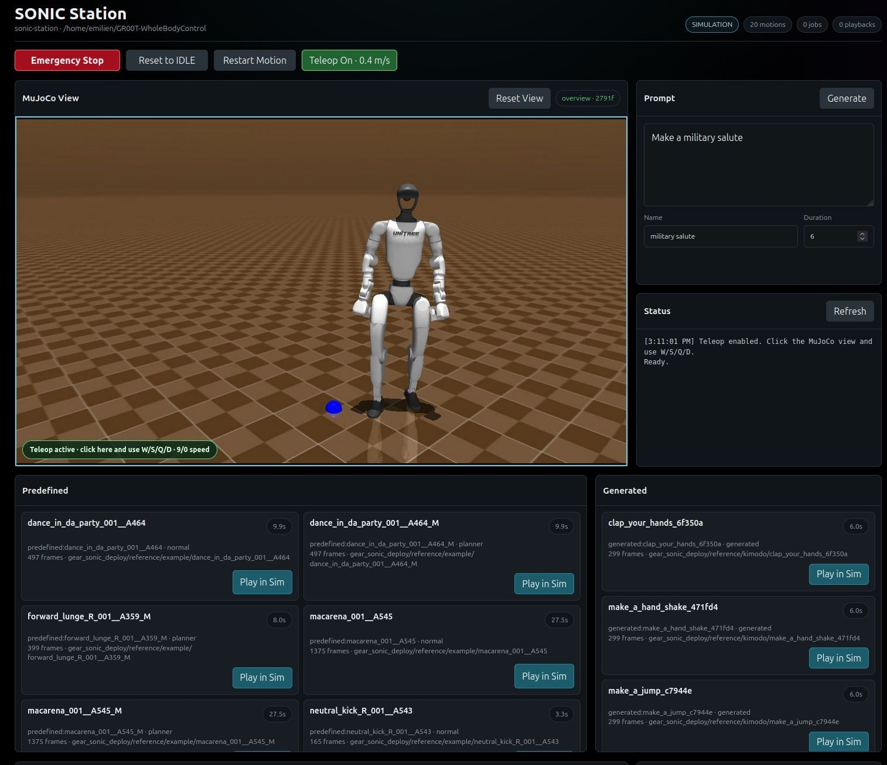
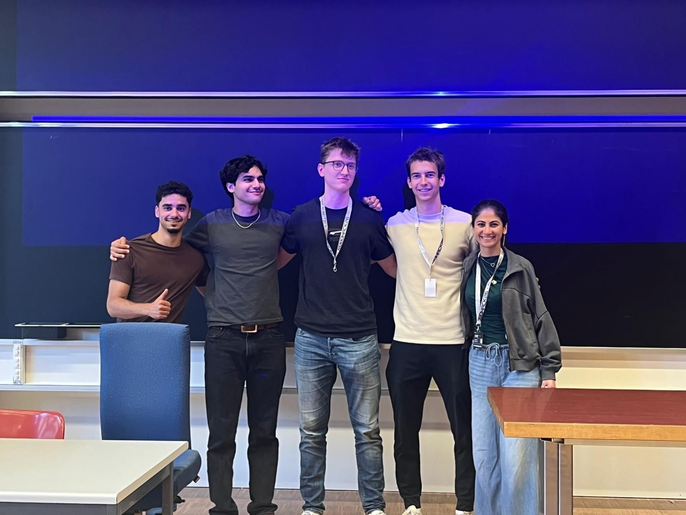
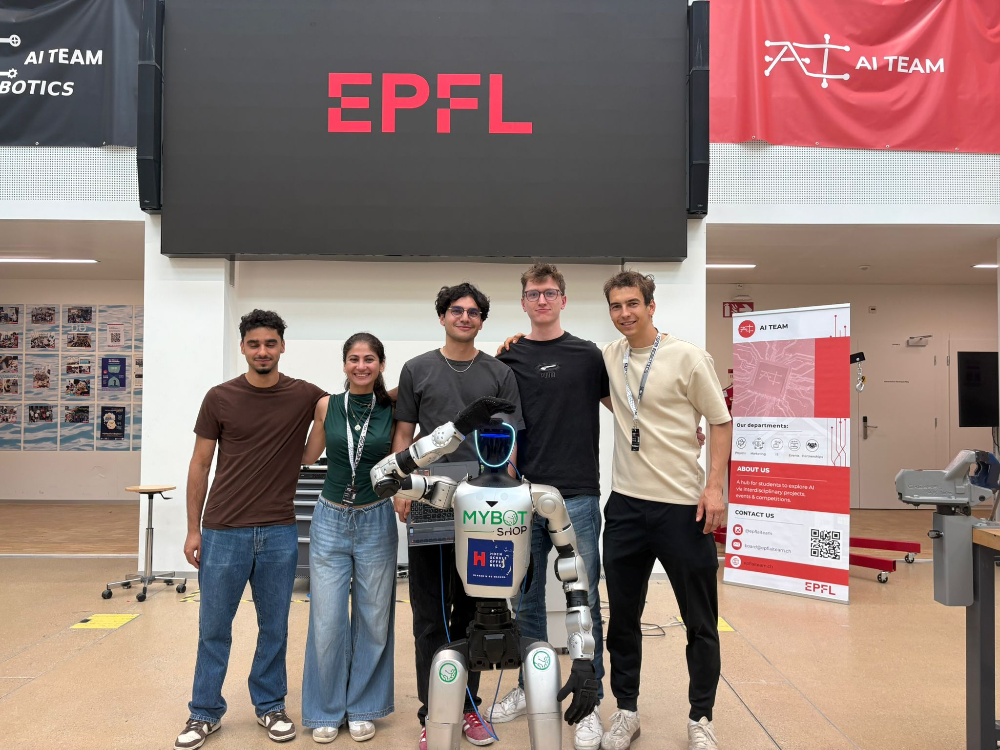

Project · EPFL Robohack 2026
Unitree G1 EPFL Hackathon - 2nd Place
EPFL Robohack 2026 · Kimodo-G1 · MuJoCo · Meta Quest teleoperation
At EPFL Robohack 2026, I worked on a control interface for the Unitree G1 humanoid and our team won 2nd place. The interface let users run predefined motions, generate new motions from text prompts with Kimodo-G1, preview them in MuJoCo, and deploy approved motions on the real robot.



The practical focus was keeping a human in the loop between generation and hardware execution. The system wrapped Kimodo-G1, converted generated motion outputs into the reference format required by the SONIC/GR00T controller, streamed commands with ZMQ, and provided real/sim launch scripts, predefined motion playback, and safety controls. Motions could be inspected in simulation before running on the robot, reducing the risk of sending unsafe or unusable commands directly to the platform.
I also built a Meta Quest teleoperation pipeline and collected demonstration data for future imitation learning. That gave the project both an immediate control interface and a path toward learning autonomous policies from human-guided humanoid behavior.